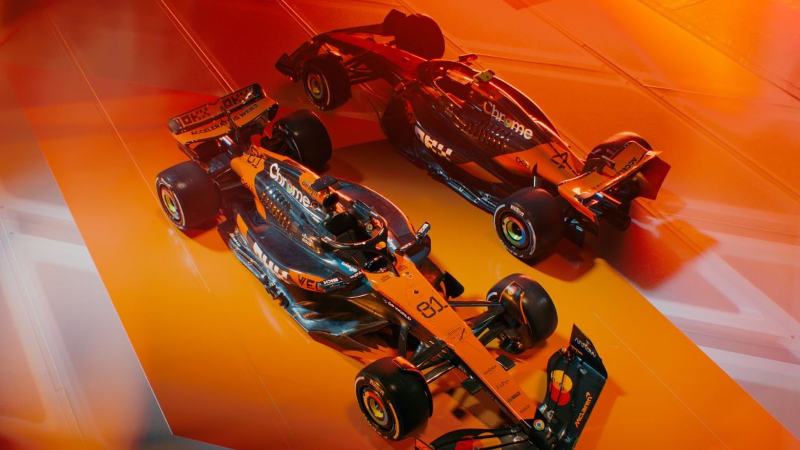

Mclaren
Equipo muy conocido y que en este ultimo año mejoro muchisimo su potencia. Sus dos pilotos pelean por el campeonato y ya estan confirmados para el año 2026, son Lando Norris y Oscar Piastri.
Equipo muy conocido y que en este ultimo año mejoro muchisimo su potencia. Sus dos pilotos pelean por el campeonato y ya estan confirmados para el año 2026, son Lando Norris y Oscar Piastri.
Dominante en los ultimos años con Max Verstappen al mando. Sus pilotos en 2025 fueron cambiando, principalmente con Max Verstappen y el segundo asiento empezo con Liam Lawson y luego termino la temporada Yuki Tsunoda.

Conocida por su historia legendaria y su famoso color rojo. Sus pilotos en 2025 y confirmados para 2026 son Charles Leclerc y Lewis Hamilton

Marca Alemana muy conocida. Hamilton fue el mejor piloto hasta el momento en este equipo. Sus pilotos en 2025 y confirmados para 2026 son George Russell y Kimi Antonelli.